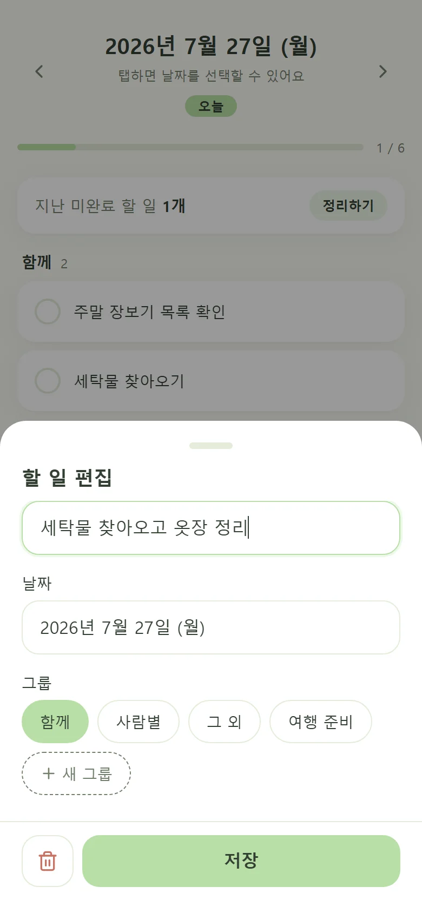
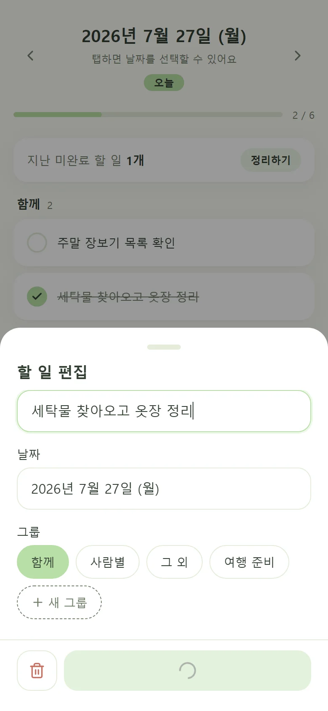
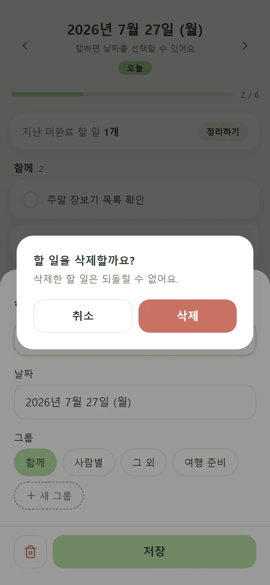
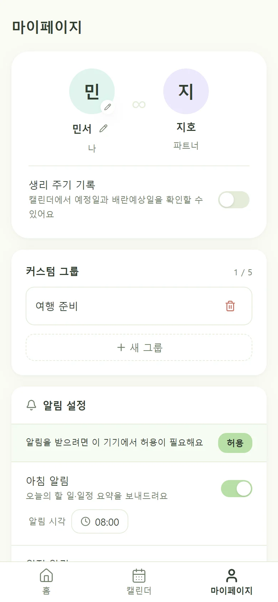

WHY I BUILT IT
결혼 준비를 하며 당시 여자친구와 여러 공유 앱을 직접 써봤습니다. 하지만 유료이거나 필요한 기능이 부족해, 둘이 원하는 흐름을 함께 논의하고 직접 제품을 기획해 개발했습니다.
2026년 6월 초 개발을 시작해 6월 중순부터 현재까지 배우자와 실제 일정과 할 일을 관리하는 데 사용하고 있습니다.
AI-ASSISTED PRODUCT DEVELOPMENT · MOBILE PWA
결혼 준비에서 발견한 문제를 AI 개발 도구와 협업해 약 2주 만에 실사용으로 전환한 공유 투두·캘린더 서비스입니다.
OWNER RESPONSIBILITY
Next.js · TypeScript · Supabase · Realtime · Web Push

01 · PROBLEM
일정과 해야 할 일이 동시에 늘었지만 캘린더와 To-do 앱을 번갈아 확인해야 했습니다. 서로 연결된 계획이 분리되면서 무엇을 언제, 누가 해야 하는지 한눈에 파악하기 어려웠습니다.
WHY I BUILT IT
결혼 준비를 하며 당시 여자친구와 여러 공유 앱을 직접 써봤습니다. 하지만 유료이거나 필요한 기능이 부족해, 둘이 원하는 흐름을 함께 논의하고 직접 제품을 기획해 개발했습니다.
2026년 6월 초 개발을 시작해 6월 중순부터 현재까지 배우자와 실제 일정과 할 일을 관리하는 데 사용하고 있습니다.
캘린더와 투두를 한 서비스 안에서 확인해 계획을 찾는 시간을 줄입니다.
일정과 해야할 일이 연결되지 않아, 오늘 무엇을 해야 하는지 한눈에 파악하기 어려웠습니다.
파트너와 진행 상태를 따로 공유해야 해 변경 내용을 놓치거나 같은 내용을 반복해서 확인했습니다.
02 · AI COLLABORATION SYSTEM
AI가 코드를 생성한 사실보다 중요한 것은 올바른 문제와 제약을 전달하고 결과를 검증하는 과정이었습니다. 제품 판단은 직접 책임지고, 탐색과 구현의 반복 비용은 AI로 줄였습니다.
HUMAN OWNERSHIP
AI ACCELERATION
사용자 요청을 화면·데이터·모바일 기준과 검증 항목으로 구체화합니다.
프로젝트 규칙, 디자인 토큰과 계층 책임을 반복 가능한 맥락으로 제공합니다.
AI가 관련 코드를 추적하고 최소 범위의 구현안을 만들도록 지시합니다.
권한, 정합성, 수명주기와 기존 기능 영향을 기준으로 구현을 다시 검토합니다.
lint, type-check, build와 실제 반응형 렌더링을 통과해야 작업을 완료합니다.
REPOSITORY EVIDENCE
AI의 답변 품질을 개인의 감각에만 의존하지 않도록 제품 기준, 기술 경계와 검증 절차를 저장소 문서와 자동화 스크립트로 관리했습니다.
03 · PRODUCT DECISIONS
범용 팀 도구가 아닌 두 사람의 생활 협업에 집중했습니다. “오늘 파악 → 담당 확인 → 함께 완료”라는 짧은 흐름을 제품 전체의 우선순위로 삼았습니다.
조직과 역할 설정 없이 함께·본인·파트너라는 생활 언어를 데이터와 UI에 일관되게 적용했습니다.
홈 첫 화면에 날짜, 완료 진행률, 지난 미완료, 담당자별 투두를 우선 배치했습니다.
375px, 44px 터치 영역, safe area, 바텀시트와 스와이프를 설계 기준으로 관리했습니다.
04 · PRODUCT IN ACTION
별도의 목업이 아니라 개발 Supabase의 격리된 데모 커플로 로그인해 실제 Auth·RLS·CRUD 경로를 실행했습니다. 투두의 생성부터 삭제, 캘린더와 커플 설정까지 실제 서비스 메뉴를 그대로 담았습니다.

01 · CREATE
날짜와 담당 그룹을 화면 이동 없이 같은 바텀시트에서 지정합니다.

02 · UPDATE
선택한 할 일의 정보와 담당자를 유지한 상태에서 내용을 바로 편집합니다.

03 · COMPLETE
체크 한 번으로 진행률과 완료 목록을 갱신해 두 사람이 같은 상태를 봅니다.

04 · DELETE
되돌리기 어려운 행동은 확인 단계를 두어 실수로 삭제하는 상황을 방지합니다.

CALENDAR · OVERVIEW
월 전체의 일정 밀도를 파악한 뒤 선택한 날짜의 담당자와 시간을 바로 확인합니다.

CALENDAR · CREATE
날짜와 시간, 반복 여부, 참여자를 하나의 흐름에서 설정해 일정 등록 부담을 줄였습니다.

CALENDAR · SEARCH
별도의 지도 앱으로 이동하지 않고 장소명과 주소를 검색해 일정에 연결할 수 있습니다.

CALENDAR · LOCATION
장소명과 주소, 지도 미리보기를 함께 제공해 잘못된 장소를 등록하는 실수를 줄였습니다.

MY PAGE · SETTINGS
커플 프로필과 개인화 설정을 한곳에 모아 공유 서비스의 관계 정보를 명확히 보여줍니다.
탭으로 메뉴를 바꾸고, 이전·다음 버튼이나 방향키·스와이프로 화면을 넘길 수 있습니다. 이미지를 누르면 원본으로 열립니다.
05 · USER FEEDBACK
함께 서비스를 사용하는 파트너에게 현재 좋은 점과 앞으로 필요한 기능을 물었습니다. 구현된 가치와 아이디어 단계의 요청을 구분해 다음 제품 판단의 근거로 정리했습니다.
REAL USER · INTERVIEW SUMMARY
일정과 할 일을 여러 앱에서 따로 확인하지 않아도 되고, 둘이 함께 관리할 수 있다는 점이 가장 편했습니다. 중요한 생활 정보까지 안전하게 연결할 수 있으면 좋겠습니다.
결혼 준비부터 현재까지 하루투두를 함께 사용한 파트너의 의견을 요약했습니다.
두 앱을 번갈아 확인하지 않고 한 서비스 안에서 일정과 할 일을 관리합니다.
함께, 본인, 파트너 항목을 구분해 두 사람의 책임과 진행 상태를 공유합니다.
개인 주기를 캘린더에서 기록하고 공개 범위에 따라 파트너와 필요한 정보만 공유합니다.
크기·굵기·색상으로 핵심 정보와 보조 정보를 구분해 반복 확인의 피로를 줄였습니다.
결혼 준비 체크리스트나 장보기처럼 반복되는 흐름을 일정과 연결해 재사용합니다.
계약서, 보험 증권, 차량 서류처럼 두 사람이 함께 확인할 문서를 보관합니다.
계약 갱신일이나 여행 일정에 문서를 붙이고 카메라로 서류를 스캔합니다.
생활비, 예산, 공동 구매 내역을 일정·투두의 생활 맥락과 함께 관리합니다.
PRODUCT & TECH REVIEW · NOT IMPLEMENTED
문서는 편의 기능이면서 동시에 고위험 개인정보입니다. 구현에 앞서 다음 조건을 제품 요구사항과 완료 기준으로 정의해야 합니다.
06 · SYSTEM DESIGN
화면의 조건문만으로 권한을 처리하지 않았습니다. Supabase Auth가 사용자를 인증하고 PostgreSQL RLS가 요청 사용자가 해당 커플의 구성원인지 최종 확인합니다.
조회 조건, RLS 정책, Realtime 필터를 관통하는 데이터 소유 경계입니다.
RLS는 접근 권한을, FK·unique·trigger는 유효한 상태를 보장합니다.
최초 조회와 구독 사이의 이벤트 유실까지 별도 refetch로 보완합니다.
07 · ENGINEERING CASES
동시성, 수명주기, 예약 정합성부터 외부 API의 한계까지 확인하고 사용자에게 신뢰할 수 있는 상태만 제공하는 방향을 선택했습니다.
읽기 후 쓰기 방식에서는 같은 코드가 동시에 사용될 수 있었습니다.
UPDATE ... RETURNING으로 코드를 원자적으로
선점했습니다.
unique index와 예외 롤백으로 한 사용자·한 커플 규칙을 DB에서 강제했습니다.
화면 이동과 재렌더링 이후 채널이 누적되고 캘린더가 멈췄습니다.
클라이언트 인스턴스와 구독 cleanup의 수명주기가 달랐습니다.
싱글턴 client, 공통 구독 함수, unique 채널명과 cleanup으로 통합했습니다.
일정 INSERT·UPDATE를 DB trigger가 감지합니다.
기존 미발송 예약을 취소하고 사용자 설정에 맞게 다시 생성합니다.
pg_cron과 Edge Function이 Web Push를 보내 관련 날짜로 연결합니다.
네이버 캘린더 홈 위젯을 활용하려 OAuth, 토큰 갱신과 일정 자동 등록 흐름을 구성했습니다.
공개 API가 일정 추가만 지원해 수정·삭제와 역방향 변경을 동기화할 수 없었습니다.
두 캘린더가 다른 상태를 보여주는 위험이 편의보다 크다고 판단해 연동을 제거했습니다.
마이페이지 UI, OAuth·일정 등록 API, 서비스 호출과 개발·운영 DB의 토큰 테이블까지 제거해 사용되지 않는 인증 정보와 불완전한 동기화 경로를 남기지 않았습니다.
PWA만으로는 iOS 홈 화면에 네이티브 캘린더 위젯을 직접 제공하기 어려웠습니다.
Scriptable이 하루투두의 월간 일정·오늘 할 일 API를 직접 조회하도록 구성했습니다.
데이터를 복제하지 않고 JWT, 커플 멤버십과 RLS를 거쳐 같은 원본을 읽게 했습니다.
갱신 토큰은 iOS Keychain에 보관하고 위젯은 5분 뒤 갱신을 요청합니다. 실제 실행 시점은 iOS가 결정하므로 실시간이 아닌, 일정 시간이 지나면 최신 데이터가 반영되는 보조 화면으로 정의했습니다.
08 · RETROSPECTIVE